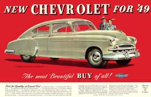
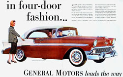
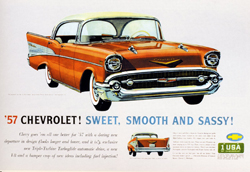

General Motors is a global automotive company united by a single purpose: To Earn Customers for Life.
Earning customers for life is the foundational promise of General Motors.
It is a commitment to treat every customer with respect. To care about a customer, not just when they purchase a new vehicle, but for as long as they own the vehicle. Appreciating customers and fighting every day to earn their loyalty inspires us to make better, safer, higher value cars, trucks and crossovers.
On November 3, 1911, Swiss race car driver and automotive engineer Louis Chevrolet co-founded the Chevrolet Motor Company in Detroit with William C. Durant and investment partners William Little (maker of the Little automobile), James H. Whiting, Dr. Edwin R. Campbell (son-in-law of Durant) and in 1912 R. S. McLaughlin CEO of General Motors in Canada.
  